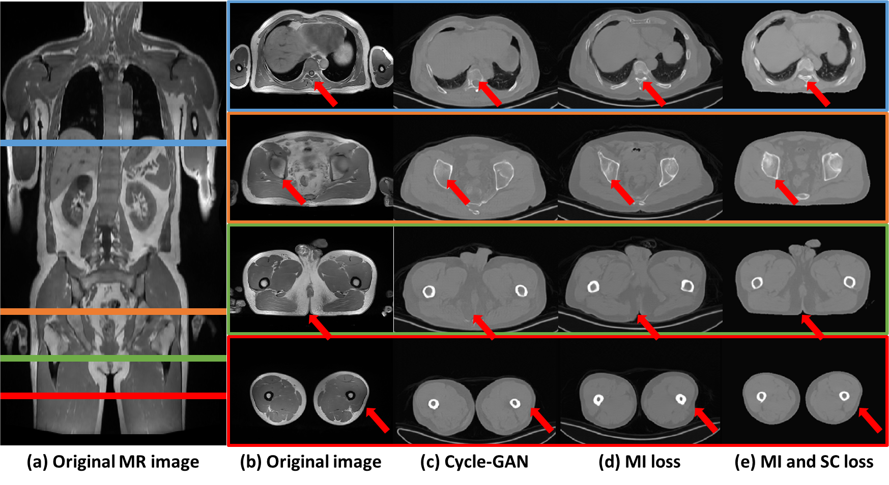
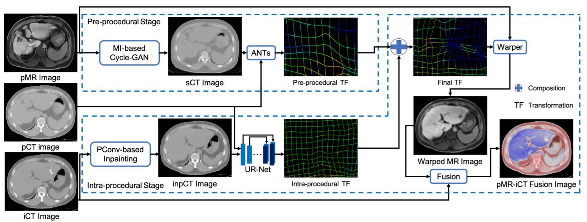

About Me
I am now a fifth-year PhD student in MIC lab at Shanghai Jiao Tong University (SJTU),
under the supervision from Dr. Qian Wang and Dr. Dinggang Shen.
Before that, I got my Bachelor degree at School of Instrumentation and Optoelectronic Engineering from Beihang University (BUAA).
My research interests lie in Medical Image Analysis, Computer Vision, and Image-Guided Surgery. Especially, I am
focusing on image registration and synthesis using various learning algorithms (CNN, GAN, VAE etc.) to advance the healthcare experience in real world.
News & Updates
-
[2020/10/16] One review paper (深度学习在医学影像中的应用综述) goes on online.
-
[2020/09/22] I am awarded National Scholarship (in Ph.D. student group).
-
[2020/07/12] I join Huawei as a research intern in summer 2020.
-
[2020/06/19] One paper (MR-CT registration pipeline for image-guided surgery) is accepted by MedIA.
-
[2019/07/01] Three papers are accepted by MICCAI 2019.
Education
Shanghai Jiao Tong University, Shanghai, China (Sep. 2016 - present)
-
PhD of Biomedical Engineering, School of Biomedical Engineering
- Thesis: Generative model based medical image registration
Beihang University, Beijingg, China (Sep. 2012 - Jun. 2016)
-
Bachelor of Information Engineering, School of Instrumentation and Optoelectronic Engineering
- Thesis: Heart rate and heart rate variability measurement using face videos
- Overall performance ranked:
3/170
Experience
Univerity of North Carolina at Chapel Hill, North Carolina, United States (Jan. 2019 - April 2020)
Univeristy of Oulu, Oulu, Finland (Feb. 2016 - Aug. 2016)
-
Visiting Researcher, Dept. of Computer Science and Engineering, CMVS
-
Sponsored by CSC
National Sun Yat-sen University, Kaohsiung, China Taiwan (July. 2013)
-
Visiting Student, Dept. of Computer Science and Engineering
-
Sponsored by Beihang University
|

|
Unpaired MR to CT Synthesis with Explicit Structural Constrained Adversarial Learning
Yunhao Ge*, Dongming Wei*, Zhong Xue, Yiqiang Zhan, Xiang Zhou, Qian Wang and Shu Liao (*=equal contribution)
IEEE International Symposium on Biomedical Imaging (ISBI), 2019.
[paper]
[code]
|
|

|
Synthesis and inpainting-based MR-CT registration for image-guided thermal ablation of liver tumors
Dongming Wei, Sahar Ahmad, Jiayu Huo, Wen Peng, Yunhao Ge, Zhong Xue, Pew-Thian Yap, Wentao Li, Dinggang Shen, Qian Wang
International Conference on Medical Image Computing and Computer-Assisted Intervention (MICCAI), 2019.
[paper]
|
Intern & Work Experience
Huawei, Inc, Hangzhou, China (July 2020 - Sep. 2020)
- Position: Research Intern
- Project: Multi-modal image fusion
- Position: Research Intern
- Supervisor: Dr. Dinggang Shen
and Dr. Zhong Xue
- Project: Unpaired Image Synthesis with Adversarial Learning
Awards
-
Sep. 2020 National Scholarship (for Graduate), (highest honor for graduates) top 1% nationwide
- July. 2016 Outstanding Graduate of Beihang Univeristy, (highest honer for graduates) top 5% in Beihang University
Academic Service
Reviewer of the following journals/conferences:
Medical Image Analysis (MedIA)
IEEE Transactions on Medical Imaging (TMI)
IEEE Transactions on Biomedical Engineering (TBME)
Pattern Recognition (PR)
MICCAI 2019, 2020
ISBI 2020
MLMI 2020
Last update: Sep. 18, 2020